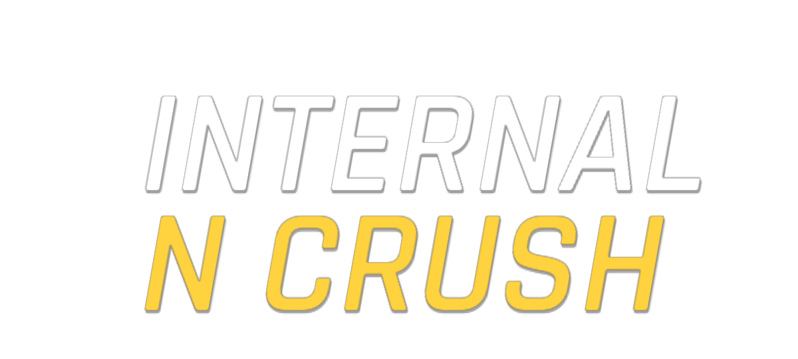
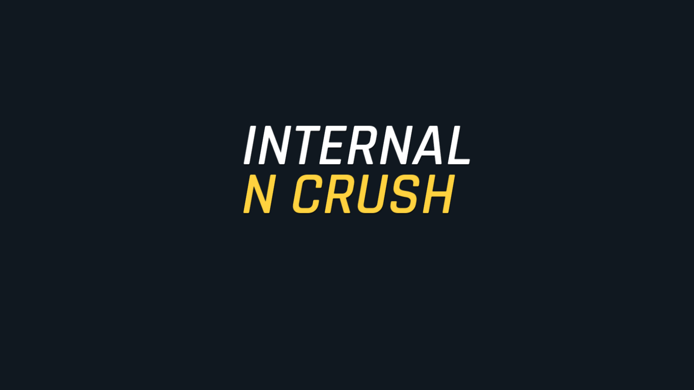

첫 실행에는 게임 파일을 내려받습니다.
모바일은 가로 화면 · PC는 키보드와 마우스로 플레이하세요.
게임 시작 → 온라인 로비에서 공용 로비에 자동 연결됩니다.
한 사람이 방을 만들고, 다른 사람들은 같은 목록에서 참가하세요.
Windows 버전은 인터넷 로비를 이용하면 웹과 함께 플레이할 수 있습니다.
인터넷 연결이 필요합니다. 학교·DMZ·VPN에서도 같은 온라인 방 목록에서 참가할 수 있습니다. 망 설정에 따라 기기 간 직접 연결이 제한될 수 있습니다.

